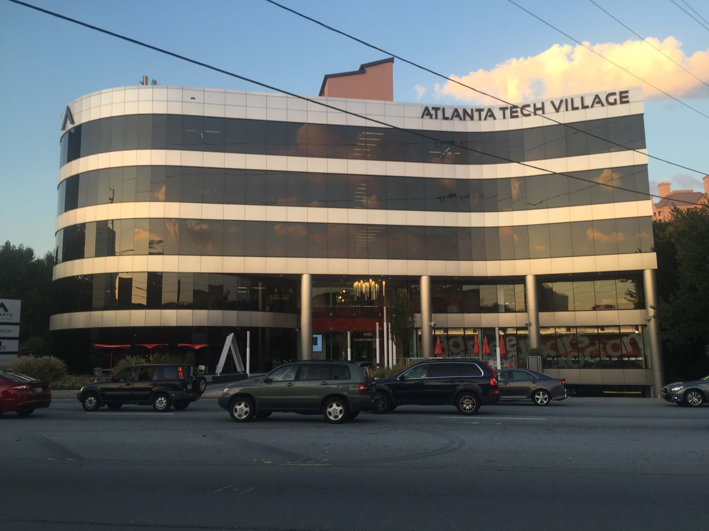
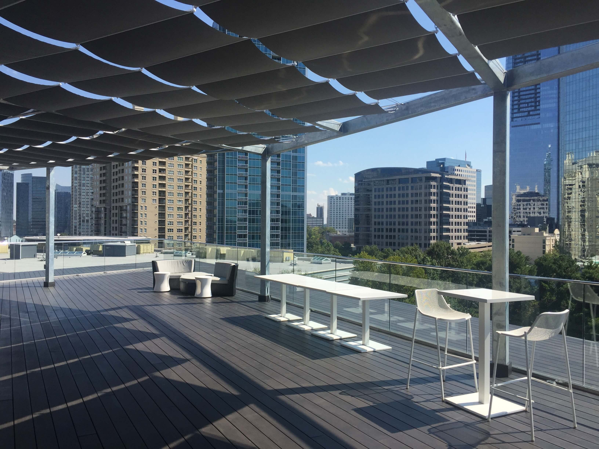
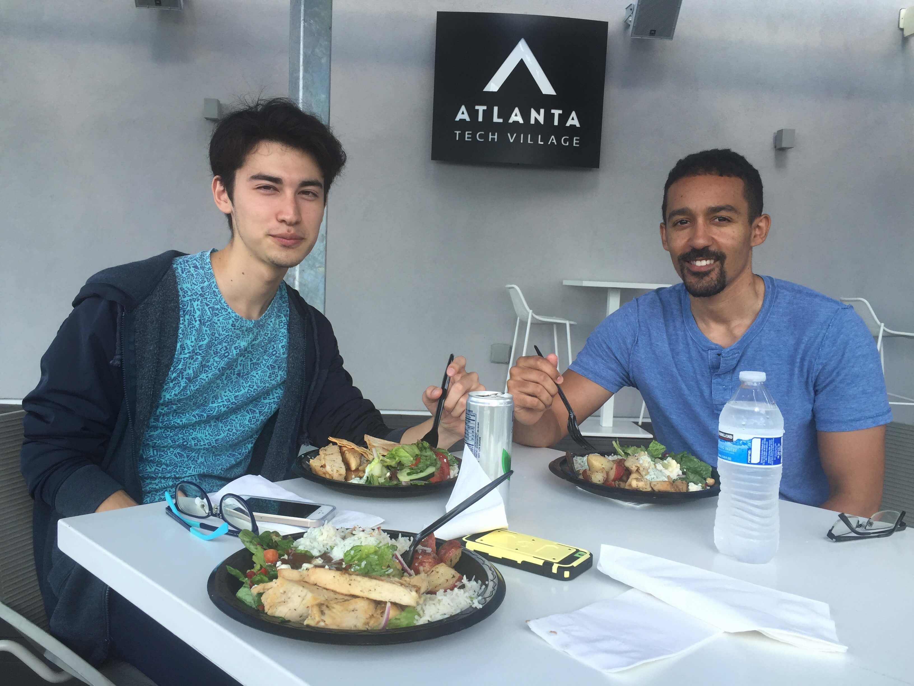
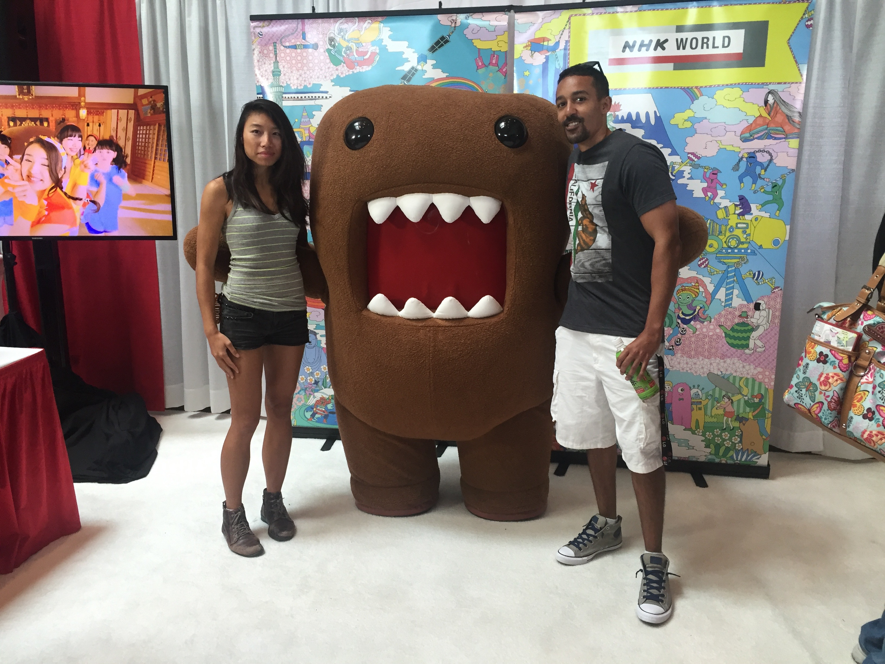
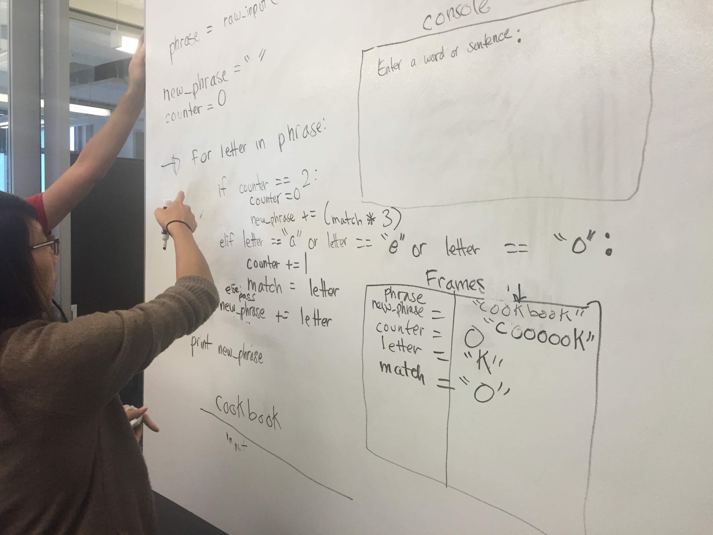
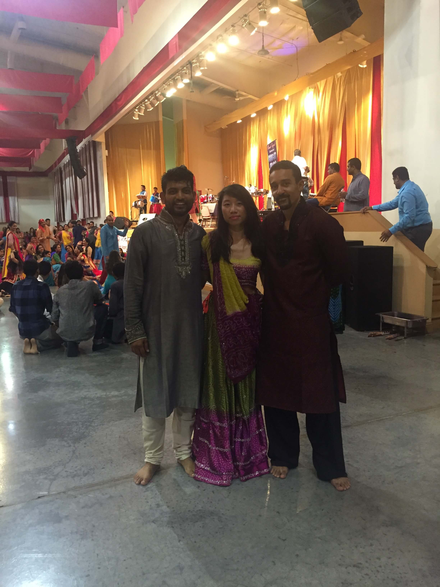

Hello Atlanta!
August 16, 2016
Ok, ok. I didn't just arrive here. I've been here almost 6 months now but it still feels new! Atlanta is very different from Los Angeles and the daily thunderstorms remind me of that. I decided to make this blog so that I can share my journey over the next 4-6 months. I also wanted to practice building a website as I go through all my pre-requisite assignments (here's my first attempt TheZenonBlog).
I'll be honest, when I first made the 30 hour drive to the zombie capital my gameplan was shaky at best. I was going to continue my insurance job until I found something better but I really dispised my job and quit soon after moving. During this time I had been completing the lessons on Codecademy because I found the world of programing intriguing. Even when I was living in Los Angeles I contemplated attending one of the many coding bootcamps in the area, but never followed through. After searching the Atlanta area for programming schools, I came across one called DigitalCrafts at Atlanta Tech Village only 5 miles away from me. I thought they had an excellent website and I enjoyed reading their blog so I made an appointment to take a tour.
I met up with Jake, the director of student services, who sat me down in the main lounge area to talk about my goals, the school and what the course consisted of. The tech building was very open and inviting and I could see a ping pong table in the room over, which instantly garnered extra brownie points. I got to see a class in session, who were in mid-celebration for one of the students who landed a job before finishing the course. By the end of the tour I was excited for the next steps in gaining admission which included a short coding test and interview.
After completing the necessary steps, I was accepted into the fall cohert, which is an intensive 4 month program. To my surprise and delight, a friend from Los Angeles has also decided to enroll in the same bootcamp and will be joining me in September. Knowing that it won't be a solo adventure makes this large pill much easier to swallow.
Class begins September 12th and until then I'll just be studying...and exploring Atlanta of course. Stay tuned for my post about the first day of class!
First Day of Class
September 12, 2016
School is in session! That exciting and nerveracking day has come and even though I've been doing the extensive list of prerequesite assignments I feel like I've barely touched the tip of the iceberg. My friend Carolyn flew in from Los Angeles a week earlier and has been preparing with me. She has more experience programming so it'll be nice having her around for help, which I'm sure I'll need plenty of.
The Atlanta Tech Village is in the heart of Atlanta's affluent business district with many surrounding highrises. We headed out at 8am and it only took us a short drive to get there. We met up with our 14 other classmates in the lobby and introduced ourselves. There was a meetup a couple days earlier where Carolyn and I met some of the students so it wasn't a completely new experience. Everyone was very friendly and Natalie, the campus director, helped us get situated with the parking and key passes. Since not all the students had toured the building we were shown around again and the second time was better than the first! Beer on tap, free snacks/drinks, free catered lunch every Friday, 2 ping pong tables, a fitness center, arcade/video game area, and a soon to be opened rooftop lounge. I know there's probably much more but what a great first...uh..I mean second impression!
9am approached and we made our way to the classroom on the 5th floor. Inside the room were several big screen tv's and rows of desks, all with external monitors for our laptops. Our instructor for the next 16 weeks was going to be Toby who I had heard good things about. After we got settled, Toby had us stand and do a quick 30 second introduction of ourselves before we began. Our very first assignment was to create a personal website using HTML and CSS, which we would showcase the next day. Time flew by as we worked and before long it was 12pm, lunchtime!

The rest of the class day passed by quickly and I was already excited for the next. I spent most of the remaining evening working on my website so that it would be at least moderately presentable for the next day. The only real request by Toby was that it had at least 10 pages in it, but creating content and styling those pages was time consuming.
The course is very fast paced and I'm sure my spare time will be limited but I'll try to write a new blog post at least every two weeks. Stay tuned!
The Nights are Calm
September 23, 2016
The first two weeks have gone by smoothly and without much stress mainly because we are still focusing on HTML, CSS and Bootstrap (a framework for creating responsive websites). Most of our time is spent trying to duplicate websites from scratch or doing exercises to help us get better at positioning elements in a webpage. During lunch or after class I play heated games of ping pong in the community center. Its great because often times I'll play against other people who work in the building, so its interesting to find out about their company and what they do.

The Atlanta Tech Village just had a grand opening of their rooftop lounge area, which has terrific views of the surrounding area. Some of my classmates and I ate under the canopy after being served the day's special, mediterranean food, as part of the complimentary lunches on Fridays.

Atlanta has so much to offer so on the weekends Carolyn and I try to find fun events to attend. Last weekend we went to JapanFest, which had lots of food to choose from and live shows starting every half hour throughout the day. Below is a picture with Domo, the official mascot of Japan's public broadcaster NHK.
In the upcoming weeks the course is going to get much more intense so I'll be back with the details alongside a pool full of sweat and confusion.
Python and PostgresSQL
October 9, 2016
Time is flying by and next week will already be week 5 of 16 making our cohort almost a third of the way done. We moved away from HTML and CSS at the end of the second week and began learning the basics of Python. Unlike the last cohort, which started with Javascript, we are learning Python first because its an easier language to understand and debug. Javascript is full of syntax that commonly displays unhelpful undefined errors when leaving out a bracket or semicolon. Python removes all of that and also gives helpful suggestions to why your code isn't working.
Within only a couple days of starting Python we were already whiteboarding much more complex problems such as ciphers and printing user given shape sizes out of asterisks. Some of the problems initially took me quite a while to wrap my brain around, especially lists within lists and nested loops. I don't think our brains naturally comprehend multidimensional scenarios since its not seen in everyday life.
The last exercises in Python that we focused on were with objects and classes. We constructed rpg games with unique characters that had certain abilties when battling other characters. This was actually pretty cool and as I get better at python, I definitely want to come back and create a more complex game.
Over the weekend one of our classmates took Carolyn and I to... When I first walked into the hindu temple, which was more like a giant warehouse I was overwhelmed by what must have been well over 1000 people in a circular dance. I'd never seen anything like it before in my life. The music, the colorful clothing, the energy...it was all so incredible. Eventually the inital shock wore off and we even attempted the dance. I really had no idea what I was doing and 99 percent of the people were Indian's who seemed to have the dance down perfectly straight out of the womb. We got there around 11pm, didn't leave till after 4am and the dancing was almost continuous the entire time. What a night!
Week 4 was primarily spent on postgreSQL, which is an open souce database system that is very helpful in storing and sorting through information. Learning how to use it was not an easy task and I feel that this was one area where the entire class struggled with because none of us had any prior knowledge unlike HTML/CSS and Python. Much of the confusion came from the syntax in joining data tables together to access specific pieces of information, which only became easier after learning how to conceptualize the relationship one table had to another.